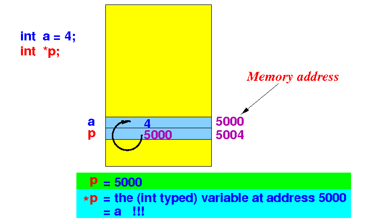

- Recall that:
- Operators operates on one or more operands (values) and return another value (kind of like a function)
- We will look at another very unusual operators in the C/C++ programming language that is not usually found in most other high level programming languages...
- The dereference operator *:
- The dereference operator *
operates on an
reference variable
and
- It returns the variable pointed to by the reference variable
- The dereference operator *
operates on an
reference variable
and
- The & and
* operators and
each other's
reverse operators:
For any variable x: *(&x) ≡ x !!!Example:
#include <stdio.h> int main(int argc, char *argv[]) { int i = 4; printf("&i = %u\n", &i ); // I SHOULD use %p, but I like %u // I can live with a warning... printf(" i = %d\n", i ); // %d = signed integer *(&i) = 9999; // * and & are each other's reverse ! // This statement is same as: i = 9999; printf(" i = %d\n", i ); // %d = signed integer }Output:
cs255-1@aruba (5777)> a.out &i = 2717581396 i = 4 i = 9999
- Example Program:
(Demo above code)

- Prog file: /home/cs255001/demo/C/set2/ref-var0.c
How to run the program:
- To compile: gcc ref-var0.c
- To run: ./a.out
- Applying
the de-reference oprator *
on a reference variable:
- If p is
a reference variable
defined as:
int *p ; // p contains an address of an int
Then the expression:
*p // You must read this as: // The operator * applied to the variable pwill return:
- The variable at the
address given by the
reference (= pointer)
variable p
- Also, the type of this variable is int because variable p points to an int typed variable
- The variable at the
address given by the
reference (= pointer)
variable p
- If p is
a reference variable
defined as:
- Illustrated:

- Example C program:
#include <stdio.h> int main(int argc, char *argv[]) { int i1 = 4, i2 = 88; int *p; printf("Address of i1 = %u\n", &i1 ); // %u = unsigned integer printf("Address of i2 = %u\n\n", &i2 ); p = &i1; // p points to variable i1 printf("Value of p = %u\n", p ); printf("Value of *p = %d\n\n", *p ); // *p is (now) alias for i1 p = &i2; // p points to variable i2 printf("Value of p = %u\n", p ); printf("Value of *p = %d\n\n", *p ); // *p is (now) alias for i2 }Output:
Address of i1 = 4290768712 Address of i2 = 4290768708 Value of p = 4290768712 Value of *p = 4 Value of p = 4290768708 Value of *p = 88
- Example Program:
(Demo above code)
- Prog file: click here
How to run the program:
- Right click on link(s) and
save in a scratch directory
- To compile: gcc ref-var1.c
- To run: ./a.out
- Fact:
- The expression *p can be used anywhere in the place of an (ordinary) variable
Illustration:
int i1; int i2; int *p; p = &i1; // p points to variable i1 *p = 1234; // Stores the value 1234 in the variable // pointed to by p (= i1)
- Example:
int main(int argc, char *argv[]) { int i1 = 4, i2 = 88; int *p; printf("Value of i1 = %d\n", i1 ); p = &i1; // p points to variable i1 *p = 1234; // Store 1234 in i1 !!! printf("Value of i1 = %d\n", i1 ); printf("Value of i2 = %d\n", i2 ); p = &i2; // p points to variable i2 *p = 9999; // Store 9999 in i2 !!! printf("Value of i2 = %d\n", i2 ); }Output:
Value of i1 = 4 Value of i1 = 1234 (i1 is changed !!!) Value of i2 = 88 Value of i2 = 9999 (i2 is changed !!!)
- Example Program:
(Demo above code)
- Prog file: click here
How to run the program:
- Right click on link(s) and
save in a scratch directory
- To compile: gcc ref-var2.c
- To run: ./a.out
- Jargon: Alias
- Alias = a different name to refer to the same variable (memory location)
- You should have seen this
phenomenon in
Java before...
Example:
BankAccount x = new BankAccount(); BankAccount y; y = x; // y is now an alias for x
- You have just seen how to
make an alias in
C:
int i1; int *p; p = &i1; // *p is now an alias for i1
- Fact:
- A reference variable
contains an address
- Some times, a
ARM register contains
the address of
a variable !!!
So you have used reference variables before in ARM assembler programming !!!
- Some times, a
ARM register contains
the address of
a variable !!!
Example:
movw r0, #:lower16:x movt r0, #:upper16:x // r0 = address of variable x ldr r1. [r0] // r0 acts like a reference variable !!! .data x: .skip 4
- A reference variable
contains an address
- Suppose
the variable x
is located at address 5000
The C reference variable p contains the address of x (= 5000)
The ARM register r0 contains the address of x (= 5000)
Then:
C expression Similar to ARM --------------------------------------------------- p r0 (= value in reg r0) *p [r0] (= value in memory location at addr r0)
- The operator &:
- &var =
the address of the
variable var
- The value of &var is
also known as
a reference
or a pointer
to the
variable var
(because it "points like an index finger" to the variable var)
- The value of &var is
also known as
a reference
or a pointer
to the
variable var
- &var =
the address of the
variable var
- The operator *
- The operator * can
only be
used on a reference variable
(that contains an address !!!)
- A reference variable contains the address of a variable var (= &var)
- Effect of
the de-reference operator *:
Suppose a reference variable p is currently pointing to some variable.
datatype *p; // p is pointing // to some variable of type datatype Then: *p = the variable (of type datatype) that p is pointing to
- The operator * can
only be
used on a reference variable
(that contains an address !!!)